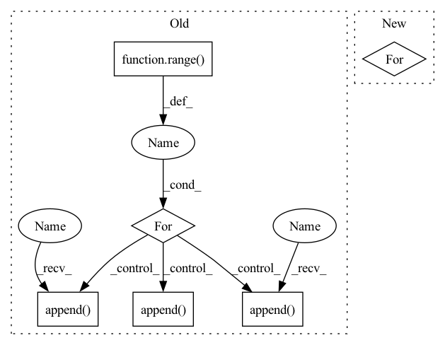

Pattern ID :218

Before Change
net = []
num_features = []
for idx in range(self.depth):
if idx == 0:
num_features.append(in_channels)
else:
num_features.append(growth_rate[idx-1])
net.append(MultiDilatedConvBlock(num_features, growth_rate[idx], kernel_size=kernel_size, norm=norm, nonlinear=nonlinear, eps=eps))
self.net = nn.Sequential(*net)
self.out_channels = sum(growth_rate)
self.eps = eps
After Change
net = []
_in_channels = in_channels
for idx in range(depth):
_out_channels = sum(growth_rate[idx:])
dilation = 2**idx
conv_block = ConvBlock2d(_in_channels, _out_channels, kernel_size=kernel_size, stride=1, dilation=dilation, eps=eps)
net.append(conv_block)
In pattern: SUPERPATTERN
Frequency: 3
Non-data size: 6
Instances
Fragment ID: 876157
Project Name: tky823/dnn-based_source_separation
Commit Name: 8fb5cd5f4f8b4a435d058aef6204904f657abea0
Time: 2021-06-06
Author: 40362510+tky823@users.noreply.github.com
File Name: src/models/d2net.py
M Class Name: D2Block
N Class Name: D2Block
M Method Name: __init__(6)
N Method Name: __init__(8)
M Parent Class: nn.Module
N Parent Class: nn.Module
M File Name: src/models/d2net.py
N File Name: src/models/d2net.py
M Start Line: 10
M End Line: 40
N Start Line: 21
N End Line: 42
'>
Before Change
res_cum_delay = 0
// SEQUENTIAL RESIDUALS
for i in range(3):
// RESIDUAL BLOCK
seq = [nn.LeakyReLU(.2)]
seq.append(
wn(
cc.Conv1d(
dim,
dim,
kernel_size,
padding=cc.get_padding(
kernel_size,
dilation=3**i,
mode=padding_mode,
),
dilation=3**i,
bias=bias,
)))
seq.append(nn.LeakyReLU(.2))
seq.append(
wn(
cc.Conv1d(
dim,
dim,
kernel_size,
padding=cc.get_padding(kernel_size, mode=padding_mode),
bias=bias,
cumulative_delay=seq[-2].cumulative_delay,
)))
res_net = cc.CachedSequential(*seq)
net.append(Residual(res_net, cumulative_delay=res_cum_delay))
res_cum_delay = net[-1].cumulative_delay
self.net = cc.CachedSequential(*net)
self.cumulative_delay = self.net.cumulative_delay + cumulative_delay
After Change
) -> None:
super().__init__()
blocks = []
for k in kernel_sizes:
blocks.append(
ResidualBlock(
dim,
k,
'>
Fragment ID: 876159
Project Name: acids-ircam/rave
Commit Name: 5d90b6d0f35887f9feeb3c473d157576e4608bfc
Time: 2022-05-19
Author: caillonantoine@gmail.com
File Name: rave/blocks.py
M Class Name: ResidualStack
N Class Name: ResidualStack
M Method Name: __init__(7)
N Method Name: __init__(6)
M Parent Class: nn.Module
N Parent Class: nn.Module
M File Name: rave/blocks.py
N File Name: rave/blocks.py
M Start Line: 35
M End Line: 75
N Start Line: 104
N End Line: 121
'>
Before Change
self.depth = depth
net = []
num_features = []
for idx in range(self.depth):
if idx == 0:
num_features.append(in_channels)
else:
num_features.append(growth_rate[idx-1])
net.append(MultiDilatedConvBlock(num_features, growth_rate[idx], kernel_size=kernel_size, norm=norm, nonlinear=nonlinear, eps=eps))
self.net = nn.Sequential(*net)
self.out_channels = sum(growth_rate)
self.eps = eps
After Change
net = []
_in_channels = in_channels
for idx in range(depth):
_out_channels = sum(growth_rate[idx:])
dilation = 2**idx
conv_block = ConvBlock2d(_in_channels, _out_channels, kernel_size=kernel_size, stride=1, dilation=dilation, eps=eps)
net.append(conv_block)
'>
Fragment ID: 876153
Project Name: tky823/dnn-based_source_separation
Commit Name: 8fb5cd5f4f8b4a435d058aef6204904f657abea0
Time: 2021-06-06
Author: 40362510+tky823@users.noreply.github.com
File Name: src/models/d2net.py
M Class Name: D2Block
N Class Name: D2Block
M Method Name: __init__(6)
N Method Name: __init__(8)
M Parent Class: nn.Module
N Parent Class: nn.Module
M File Name: src/models/d2net.py
N File Name: src/models/d2net.py
M Start Line: 10
M End Line: 40
N Start Line: 21
N End Line: 42